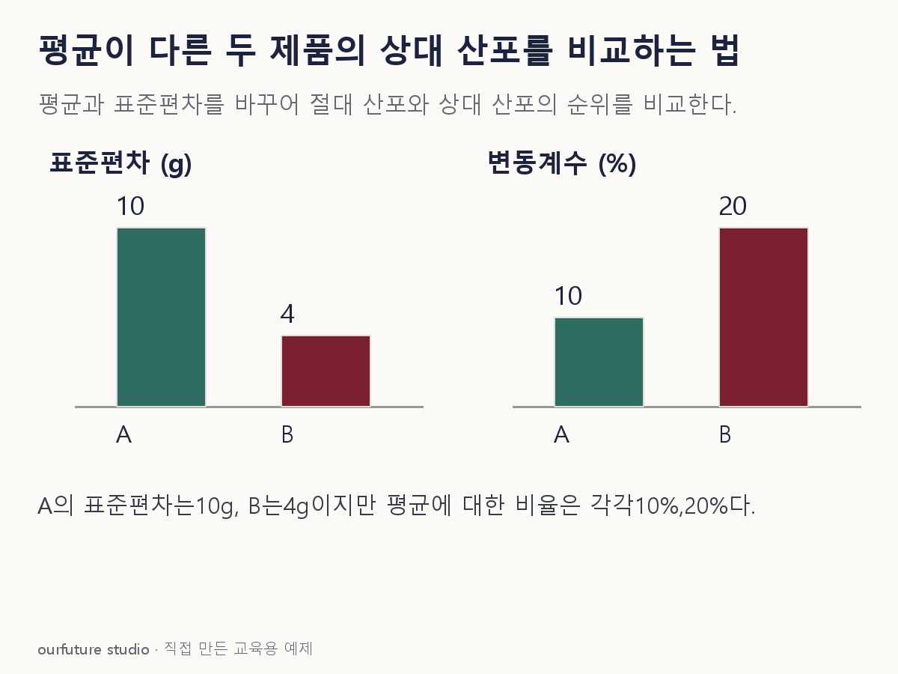

조건을 바꾸며 확인하기
비율척도와 양수 평균을 가정한다. 원점 이동·음수 평균·추정 불확실성·불량률은 계산하지 않는다.
설명 그림과 비교하기
아래 그림과 표는 고정된 설명 예제입니다. 기본·변형 중 어떤 조건인지 캡션을 읽고, 바꾼 입력의 결과는 계산 칸에서 확인하세요.

같은 문제를 직접 골라 보기
A 평균 100g·표준편차 10g, B 평균 20g·표준편차 4g. 양수 비율척도이며 같은 표준편차 정의를 쓴다.
조건을 더 바꾸면?
두 제품의 단위를 g에서 mg으로 바꾼다. 변동계수와 상대 산포의 순위는 어떻게 될까?
변형 풀이 확인
A 10%, B 20%로 유지되며 B가 크다.
평균과 표준편차가 모두 1,000배가 되어 나눗셈에서 단위 변환 배율이 상쇄된다.
몇 g인가와 평균의 몇 %인가는 다른 질문이다.